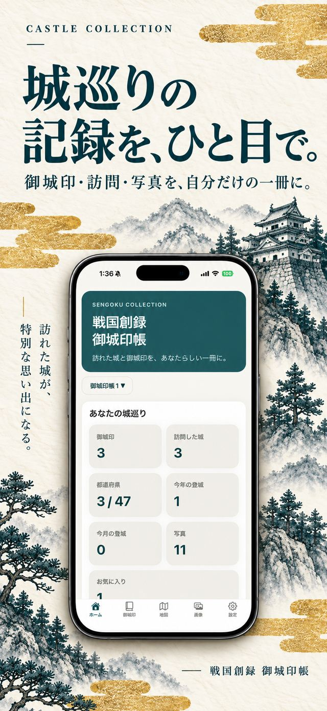
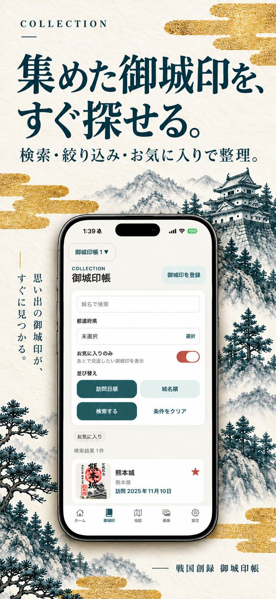
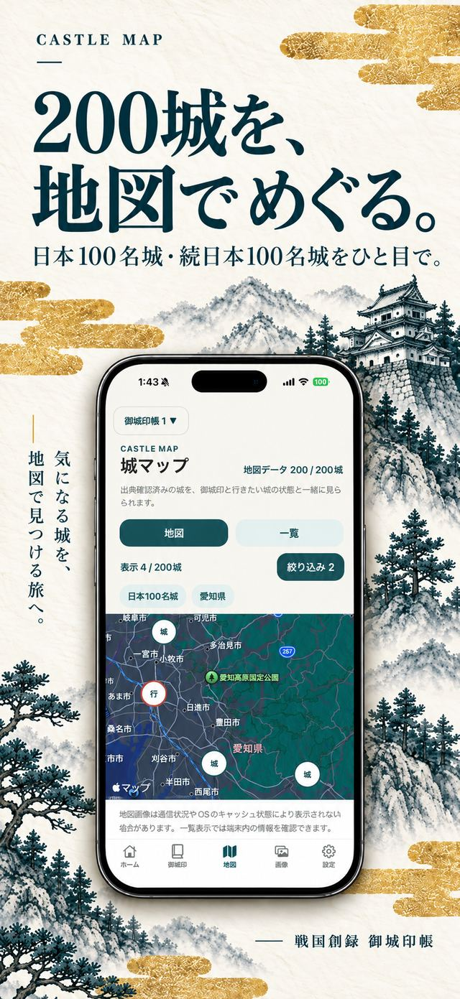
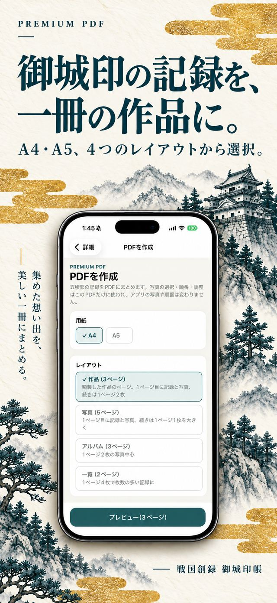
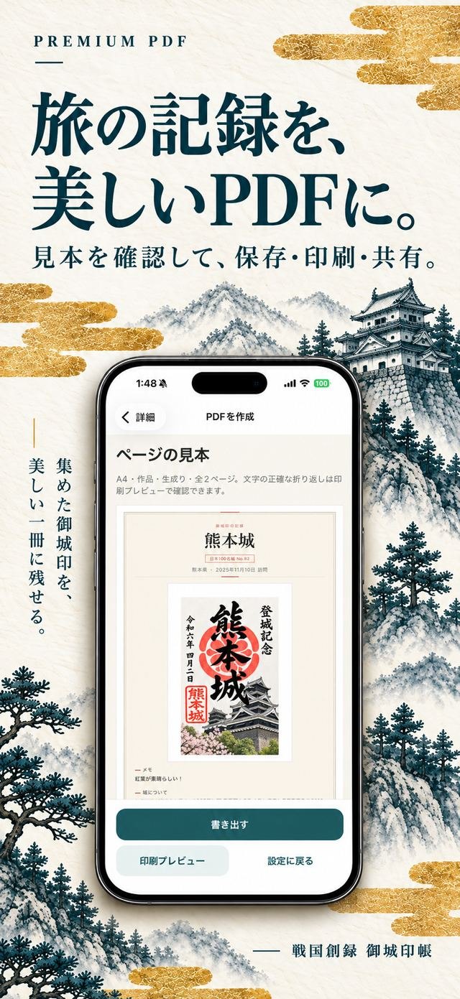

プレミアム機能
¥800買い切り
- 複数の御城印帳の作成・切り替え
- 写真最大10枚の複数ページPDFの作成・保存・印刷・共有
価格は日本のApp Storeでの表示です。購入はApple Accountで行い、機種変更後などは「購入を復元」で利用できます。
SENGOKU SOUROKU — GOJOIN BOOK
城巡りの記録を、ひと目で。
御城印・訪問・写真を、自分だけの一冊に。
アカウント登録不要。記録はiPhone内に保存。

RECORD
城名や訪問日、旅のメモまで。御城印や城郭写真、案内板、パンフレットの写真を、1件につき最大10枚まで種類・キャプション付きで残せます。
BROWSE
城名（かな・別称を含む）での検索、都道府県での絞り込み、お気に入りの表示で、思い出の御城印をすぐに見つけられます。日本100名城・続日本100名城の訪問状況や、都道府県ごとの進み具合も確認できます。

CASTLE MAP
日本100名城・続日本100名城、合計200城を地図で確認できます。登録済み・未登録、行きたい城、お気に入り、都道府県で絞り込み、次に訪れる城を探せます。

MULTIPLE BOOKS プレミアム
旅ごと、地域ごと、テーマごとに、御城印帳を自由に作成・切り替えできます。帳の作成・名前の変更はプレミアム機能です。
PREMIUM PDF プレミアム
1件の記録を、写真を並べた複数ページのPDFにまとめられます。見本で仕上がりを確認してから、保存・印刷・共有。PDFのための写真の選択・順番・トリミング・回転は、そのPDFだけに使われ、元の写真は変わりません。


PRIVACY
戦国創録 御城印帳は、アカウント登録を必要としません。御城印の記録や登録した写真は端末内に保存され、開発者が運営するサーバーへは送信しません。地図の表示、アプリ内購入、アプリの更新の確認ではAppleやExpo社のサービスとの通信が発生します。詳しくはプライバシーポリシーをご確認ください。
プライバシーポリシーを確認するINFORMATION
WHAT'S NEW — VERSION 1.2.0
SUPPORT
使い方や不具合については、サポートページをご確認のうえメールでお問い合わせください。
sengoku.souroku.support@gmail.com
サポートページを見るAPP STORE
iPhone専用（iOS 15.1以降）。アプリ本体は無料です。
App Storeで見る「戦国創録 御城印帳」は非公式アプリであり、公益財団法人日本城郭協会、各城郭、自治体、その他の関連団体等の公式アプリではありません。日本100名城・続日本100名城の名称・番号等は同協会が公開している情報を参考にしていますが、本アプリの内容について同協会または各関連団体が保証・承認するものではありません。最新の公式情報は各公式案内をご確認ください。